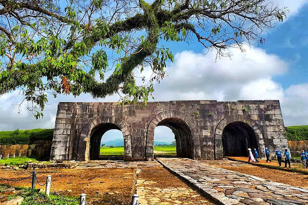
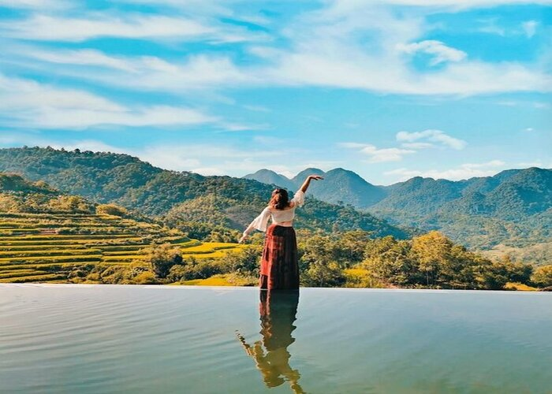
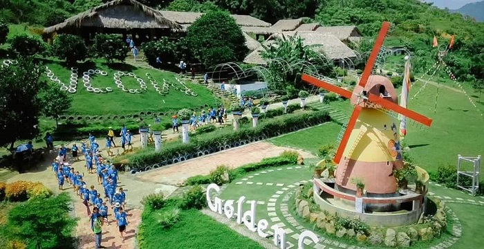

Top 5 điểm du lịch Thanh Hóa được yêu thích nhất 2021
Điểm du lịch Thanh Hóa nào nổi tiếng và được yêu thích nhất xứ Thanh? Khám phá ngay những điểm đến check-in siêu đẹp từ đồng bằng đến miền núi, từ biển lên rừng sau đây nhé!
1. Thành Nhà Hồ - Địa điểm du lịch Thanh Hóa không nên bỏ lỡ
Thành nhà Hồ (hay còn gọi là thành Tây Đô, thành An Tôn, thành Tây Kinh hay thành Tây Giai) là kinh đô nước Đại Ngu (quốc hiệu Việt Nam thời nhà Hồ), nằm ở huyện Vĩnh Lộc, tỉnh Thanh Hóa, xây dựng bởi Hồ Quý Ly vào năm 1397. Đây không chỉ là điểm du lịch Thanh Hoá, mà còn là biểu tượng lịch sử tiêu biểu được CNN đưa vào danh sách 21 di sản vĩ đại nhất thế giới. Dù đã có 600 năm tuổi đời nhưng Thành nhà Hồ vẫn rất vững chãi và trường tồn với sức mạnh của thời gian.
2.Du lịch Suối cá thần Thanh Hóa - Khám phá điều bí ẩn
Suối Cá Thần Cẩm Thuỷ còn được gọi là Suối Ngọc, nằm ở chân núi Trường Sinh, thuộc bản Lương Ngọc, xã Cẩm Lương (Cẩm Thủy, Thanh Hóa), cách trung tâm thành phố Thanh Hoá hơn 80km. Điểm du lịch Thanh Hoá này chính là minh chứng xác thực cho câu “nhỏ nhưng có võ”, vì tuy chỉ rộng 3-4 mét nhưng bạn dễ dàng có được nhiều shot ảnh xinh và độc đáo tại đây.
3. Khu bảo tồn thiên nhiên Pù Luông - Địa điểm check-in Thanh Hóa siêu đẹp
Khu bảo tồn thiên nhiên Pù Luông cách thành phố Thanh Hóa 130km về phía Tây Bắc và cách Hà Nội khoảng 150 km. Đường đến Pù Luông dù đi từ hướng Hà Nội hay Thanh Hóa đều rất dễ đi, ngay cả những đoạn đường đèo.
Đến Pù Luông, bạn có thể ngắm nhìn những bản làng được bao quanh bởi ruộng bậc thang, những cánh rừng xanh mát xen lẫn những dãy núi trập trùng cùng con suối và dòng thác mát rượi.
4. Nông trại Golden Cow - Nông trại siêu cool
Nông trại Golden Cow (hay còn được gọi là nông trại Học Đường), là một địa điểm du lịch Thanh Hoá nằm ở xã Lương Sơn, huyện Thường Xuân - một dịa điểm lý tưởng để bạn tận hưởng thiên nhiên, thư giãn và vui chơi cùng gia đình, bạn bè.
5. Du lịch Sầm Sơn Thanh Hóa - Hè phải tới chơi!
Sẽ thật thiếu sót khi không nhắc đến biển và các bãi tắm khi nói về du lịch Thanh Hoá. Không chỉ là một bãi biển thu hút, mà biển Sầm Sơn gần như là cái tên gắn liền với xứ Thanh, cảnh vật hữu tình, thư thái, với cảnh trời biển và bầu trời trong xanh. Sầm Sơn có bờ biển dài khoảng 9 km, từ cửa Hới (sông Mã) đến Vụng Tiên (Vụng Ngọc), có độ dốc thoải, bãi cát trắng mịn và nước biển ấm.
Đây gần như là điểm du lịch Thanh Hoá không-thể-bỏ-qua nếu bạn đến đây vào mùa hè. Thoả thích vui chơi bên bờ biển, tắm mình trong làn nước trong, thưởng thức những món hải sản tươi ngon từ những người dân chài vừa kéo lưới là những hoạt động bạn có thể trải nghiệm tại biển Sầm Sơn.